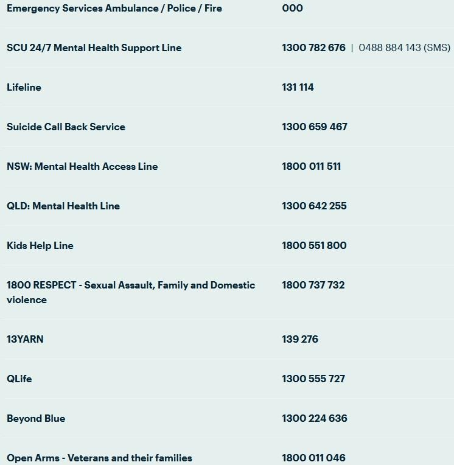

Original Blackboard item · _7400117_1
During this module we will be discussing discriminatory events and perceptions that may be triggering to some students due to lived experience. If you ever feel the need to take a break during one of these discussions on reading content, either for a short time or for the rest of the class session, you may always do so without academic penalty.
If students wish to discuss your personal reactions to this material, either with the class or with the Lecturer afterwards, such discussion is welcomed as an appropriate part of our coursework.
SCU help guide: https://www.scu.edu.au/current-students/services-and-support/counselling/
